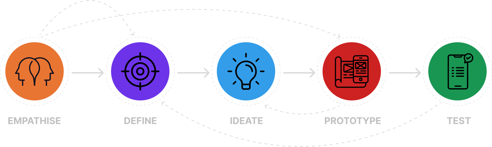
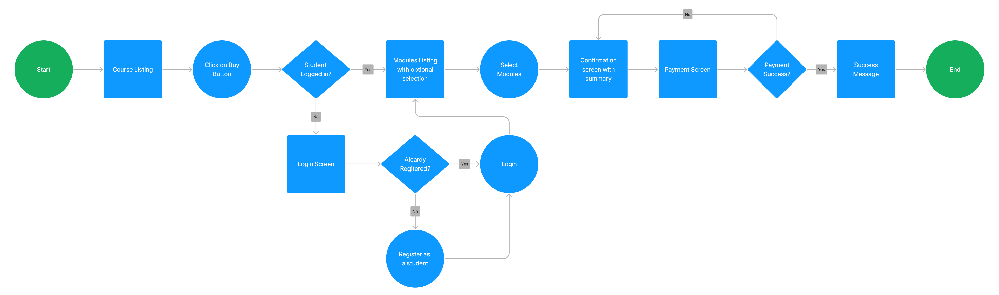
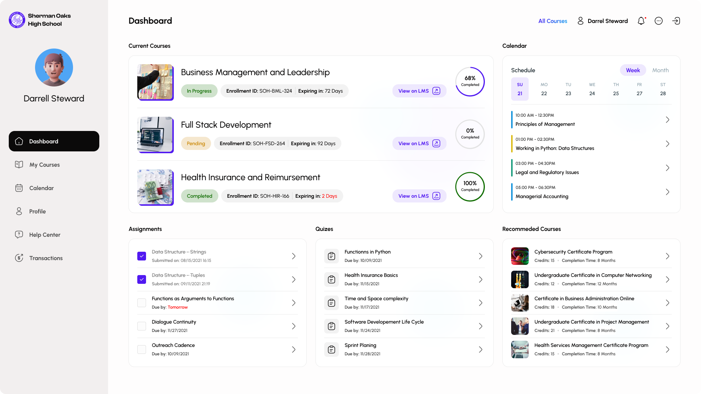
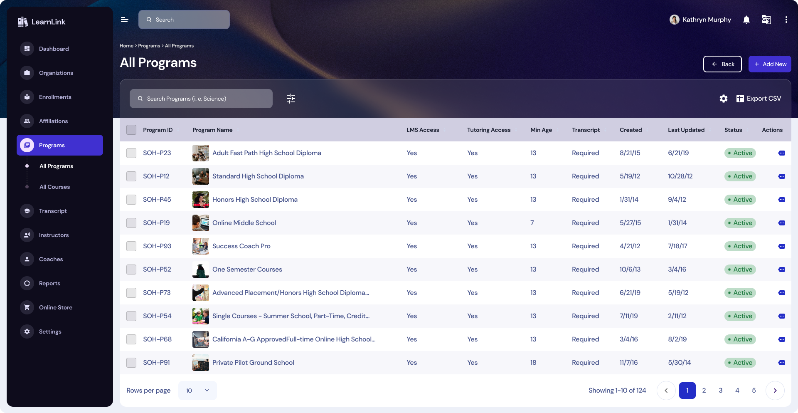

Forming the Perfect Solution: A UX Case Study on Designing a User-Friendly Form Builder Web App.
Introduction
A form builder web application is a software that enables users to create and publish web forms for various purposes such as surveys, feedback collection, event registration, and data collection. The goal of this project is to design a form builder web application with a user-friendly interface that makes it easy for users to create and manage their forms.
The Process
The overall goal of this design thinking course is to help you design better products, services, processes, strategies, spaces, architecture, and experiences. Design thinking helps you and your team develop practical and innovative solutions for your problems. It is a human-focused, prototype-driven, innovative design process.
User Research
To understand the needs and expectations of users, a user research phase was conducted. The following research methods were used:
- Online Surveys
- Interviews
- User Testing
An online survey was conducted to gather information on the current form builder tools that users are using and their pain points with these tools.
In-depth interviews were conducted with form builder users to understand their specific requirements and the features they expect from a form builder tool.
User testing was conducted with a prototype of the form builder web application to gather feedback on the design and usability of the application.
Research Findings
Based on the research findings, the following were the key requirements of users for a form builder web application:
- Ease of Use: Users expect the form builder to be simple and intuitive to use, with a drag-and-drop interface for easy form creation.
- Customization Options: Users want the ability to customize their forms with various elements such as text boxes, checkboxes, radio buttons, and dropdown menus.
- Responsive Design: Users expect the forms to be responsive and adjust to different screen sizes and devices.
- Integrations: Users want the ability to integrate their forms with various third-party tools such as email marketing platforms, payment gateways, and analytics tools.
- Templates: Users want access to pre-designed templates to save time and effort in form creation.
Based on the research findings, the following design process was followed:
- Wireframing: The first step was to create wireframes of the application to define the structure and layout of the application.
- Prototyping: A clickable prototype was created to test the usability and functionality of the application.
- User Testing: User testing was conducted with the prototype to gather feedback on the design and usability of the application.
- Visual Design: The visual design phase involved creating a modern and clean interface with a consistent color scheme and typography.
- Development: The final step was to develop the form builder web application based on the design specifications.
Design Solutions
The following design solutions were implemented based on the research findings and design process:
Drag-and-Drop Interface:
A drag-and-drop interface was implemented for easy form creation, allowing users to simply drag form elements onto the form and arrange them as needed.
Customization Options:
Users can customize their forms with various elements such as text boxes, checkboxes, radio buttons, and dropdown menus.
Responsive Design:
The forms are responsive and adjust to different screen sizes and devices to provide a consistent user experience.
Integrations:
The form builder web application integrates with various third-party tools such as email marketing platforms, payment gateways, and analytics tools.
Templates:
Pre-designed templates are available for users to save time and effort in form creation.
Student Portal Screens
Admin Portal Screens
Conclusion
The form builder web application was designed with a user-centric approach to provide a simple and intuitive experience for users. The design solutions were based on research findings and user feedback, ensuring that the application meets the needs and expectations of users. The application was successfully